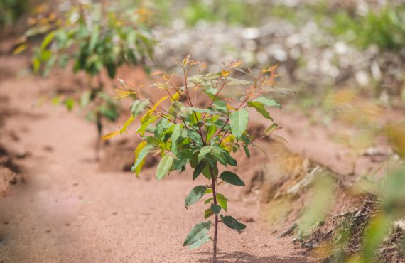

Eucalipto é o nome popular dado a algumas espécies de gêneros botânicos Eucalyptus e Corymbia,árvores pertencentes à família Myrtaceae. Ele é oriundo da Austrália e das ilhas da Oceania. São mais de 700 espécies diferentes, mas apenas vinte delas, aproximadamente, são utilizadas com fins comerciais. Não existe uma data exata que registre a introdução do eucalipto no Brasil. Entretanto, há relatos de que os primeiros exemplares foram plantados no Rio de Janeiro – em áreas pertencentes ao Jardim Botânico –, nos anos de 1825 e 1868. 